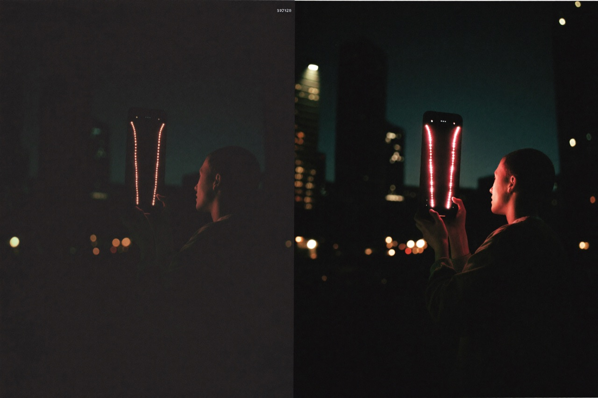

대부분의 앱은 나라마다 앱스토어 심사와 승인을 통과해야 한다. 톤티비는 그 절차가 필요 없다. 텔레그램 미니앱으로서, 서비스 첫날부터 전 세계에 동시에 켜진다.
지역별 출시 일정의 시차도, 스토어 정책에 따른 공백도 없다. 한국·일본·베트남·인도·인도네시아·필리핀의 시청자가 같은 밤, 같은 신작 드라마를 손바닥 위에서 동시에 만난다.
같은 밤, 같은 드라마
글로벌 동시 출시는 단순한 편의가 아니라 전략이다. 화제의 신작이 특정 국가에만 먼저 풀리고 다른 곳은 기다려야 하는 구조에서는, 화제성이 분산되고 불법 유통이 끼어든다. 톤티비는 전 세계가 동시에 같은 콘텐츠를 즐기게 함으로써 화제의 밀도를 한곳에 모은다.
동시 출시
지역별 앱스토어 승인 절차 없이 전 세계 동시 서비스
10억
텔레그램 월간 이용자 · 매일 +250만 명 증가
1억+
텔레그램 지갑에서 자산을 관리하는 이용자 (TON 생태계)
네트워크가 만드는 속도
톤티비의 성장은 시청과 동시에 토론·공유·추천이 일어나는 소셜 결합형 구조에서 나온다. 텔레그램 그룹과 채널을 타고 콘텐츠가 번지면, 새로운 시청자는 같은 메신저 안에서 즉시 합류한다. 글로벌 동시 출시와 네트워크 효과가 맞물리며 초기 확산 속도가 폭발한다.

톤티비는 숏폼 드라마는 물론, 향후 라이브 스트리밍 등 실시간 콘텐츠 영역까지 아우르는 글로벌 1위 플랫폼으로의 도약을 목표로 한다. — 톤코퍼레이션 보도자료
동시 출시 모델은 콘텐츠 화제성을 극대화하는 동시에, 각국 현지 지사가 만드는 로컬 콘텐츠를 전 세계 시청자에게 즉시 선보일 수 있는 통로가 된다. ‘글로벌 원 플랫폼’ 위에서 ‘로컬 이야기’가 국경을 넘는다.
10억 명이 켜는 플랫폼, 그 인프라를 소유하세요
톤티비 시청자 광고 리워드의 20%가 전체 노드에 분배됩니다. 노드 1개 $1,000 · 1차 3,000개 한정.